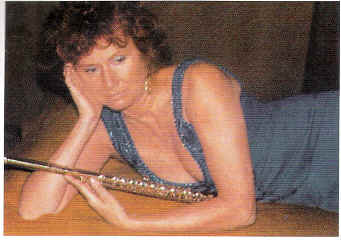
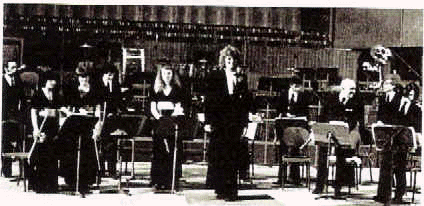
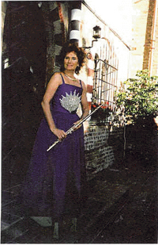
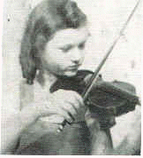
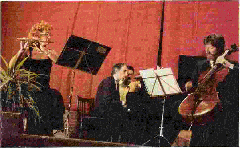
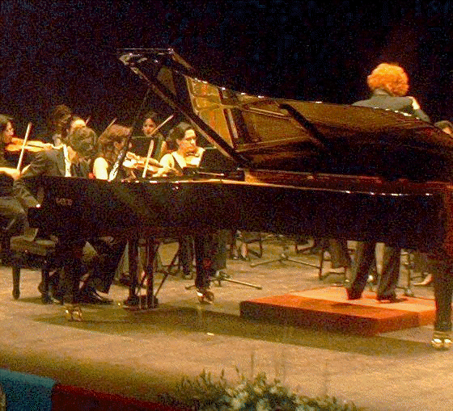

|
Una Vita dedicata
alla Musica

Pubblichiamo un omaggio a Marlaena
Kessick, riprendendo integralmente un bell'articolo di
GianLuca Petrucci, uscito sulla rivista specializzata "falaut",
numero 26, luglio-settembre 2005, per gentile concessione
dell'editore "FALAUT" e del Direttore Editoriale Salvatore
Lombardi. (e-mail
falaut@falaut.it,
sito web
www.falaut.it)
E' con particolare piacere che pubblichiamo queste
note, poiché Marlaena Kessick è uno dei soci fondatori e
promotori dell'Associazione Classica Viva, ed è uno degli
artisti con i quali le nostre Edizioni stanno portando
avanti un gran numero di progetti, sia di nuove incisioni
discografiche che di concerti.
Quest'anno,
dopo 37 anni di insegnamento presso il Conservatorio
Giuseppe Verdi di Milano, Marlaena Kessick andrà in
pensione. La pregevole flautista, stimatissima da Leonardo
De Lorenzo, allieva a Parigi di Gaston Crunelle e a Milano
di Baldassare Torchio, fu la prima a proporre un modello di
flautismo polivalente ed imprenditoriale assolutamente nuovo
per l'Italia, il quale, nei suoi vari aspetti, comprendeva
l'essere primo flauto di un'orchestra, insegnante di
Conservatorio, revisore di brani flautistici, autore di
testi didattici, concertista, promotore di proposte
discografiche accattivanti.
Marlaena Kessick,
alla quale il flautismo italiano è debitore anche per ciò
che concerne la diffusione di pregevoli strumenti in un
periodo in cui era difficilissimo poterne disporre, fondò
un'orchestra di flauti ed un Festival flautistico, che hanno
rappresentato i primi semi di un concetto di aggregazione,
confronto e reciproco rispetto. Appare dunque più che
doveroso ricordare la sua straordinaria avventura artistica,
la partecipazione alla vita musicale italiana ed il suo
appassionato modo di essere flautista attraverso le sue
pubblicazioni, i suoi dischi, la sua attività di attenta
organizzatrice.
Questo omaggio
non vuole rappresentare solo un encomiastico saluto, ma
consegnare alle giovani generazioni di flautisti italiani,
che conoscono solo in parte la produzione e l'importanza di
Marlena Kessick, una testimonianza di come lo stile, la
coerenza e l'onestà intellettuale debbano sempre guidare la
vita artistica di un musicista.
Marlaena ha
saputo rappresentare tutte queste qualità con in più la rara
dote della benevolenza verso i suoi colleghi in ogni
circostanza della sua vita artistica vissuta in ambienti in
cui la concorrenza era fortissima ed in un periodo della
vita musicale italiana dominata da una personalità
carismatica assoluta come quella di Severino Gazzelloni.
Anche di ciò dobbiamo esserle grati ed augurarci che la sua
lezione possa continuare nelle parole, nei gesti e negli
atti dei suoi tanti allievi fra cui possiamo ricordare
Giulio Giannelli Viscardi, Renata Ferri, Daniela Pisano,
Cecilia Vallini, Donatella Gulli, Giuseppina Mascheretti,
Vilma Campitelli, Marco Tutino, Luca Bassi, Eugenia
Soregaroli.

Biografia
Marlaena Kessick
è nata il 14 ottobre del 1935 a New York, figlia di Dorothy
Noble, violinista italo-inglese, e di Edward Kessick,
ingegnere progettista slavo-tedesco, dilettante di violino.
La tradizione musicale era patrimonio comune di entrambe le
famiglie dei genitori.
Il nonno di
Dorothy, John Swann, era un violinista diplomato al
Conservatorio di Leipzig, direttore dell'Orchestra d'archi
del Palace Pier di Brighton (Sussex, Inghilterra), ed in
seguito aveva ricoperto il ruolo di Prima Cornetta della
Banda Reale della regi na Vittoria; il padre di Edward,
suonatore di grancassa, era stato per molti anni nella Banda
Militare del Kaiser Wilhelm.
Con questa
premessa è facile comprendere come Marlaena abbia avuto un
inizio musicale estremamente precoce. Già all'età di due
anni le vennero impartite, dalla madre, le prime lezioni di
teoria e a tre anni suonava gli studi di Leopold Auer con un
violino di misura sedicesimo. La madre, oltre ad essere
un'ottima didatta e artista di pregio, aveva effettuato
anche studi nel campo della psicologia e riusci a suscitare
e mantenere vivo l'interesse nella bambina per uno strumento
di grandi difficoltà come il violino, portandola ad
eseguire, all'età di sette anni, studi di Sevcik e Rode.

Marlaena Kessick nel suo Castello di Belveglio
Marlaena
Kessick a 5 anni
Arrivò però il momento in cui Marlaena
ebbe bisogno di una guida che non fosse più l'affettuosa
presenza materna per poter esercitare, con più soggezione e
disciplina, il necessario perfezionamento. La bambina
continuò dunque lo studio del violino con il primo violino
dell'orchestra Filarmonica di New York, che predisse per lei
una brillante carriera. Estremamente dotata
intellettualmente, Marlaena a cinque anni aveva già preso
parte come attrice a una trasmissione radiofonica per i
giovani alla NBC.
Ogni domenica mattina doveva leggere il copione di uno
sketch comico. Continuò questa attività per sei anni. In
questo periodo, oltre allo studio della musica e della danza
classica sotto la guida di miss Curtis alla scuola del
Metropolitan di New York, Marlaena seguì lo studio delle
materie scolastiche a casa con la madre, e quando le
autorità del Provveditorato agli Studi scoprirono che, pur
avendo sette anni, non era mai stata iscritta ad una scuola
elementare, la sottoposero a una serie di esami per
stabilire se ammetterla al primo o al secondo anno. Invece,
gli studi intrapresi con la madre l'avevano portata talmente
avanti da classificarla pronta per la scuola media. Per
evitare di inserire una bambina di sette anni in un gruppo
di ragazzi più grandi le fu concesso di non iscriversi ad
alcuna scuola.
Continuò così
gli studi a casa e, avendo tempo a disposizione, si dedicò
anche allo studio del pianoforte e dell'armonia. Tuttavia la
sua grande passione in quegli anni era il canto. Ascoltava
per ore ed ore le romanze liriche incise dalla Tetrazzini,
Lucrezia Bori, e dalla prediletta Amelita Galli Curci, e il
suo più grande sogno era
quello di cantare. Con il piccolo stipendio datole dal padre
comprava gli spartiti, e voleva a tutti i costi imparare le
arie preferite ("Una voce poco fa" dal Barbiere di Siviglia,
la "Scena della pazzia" dalla Lucia di Lammermoor, ecc. ).
La famiglia
decise di portarla da una grande cantante per un parere. A
otto anni Marlaena cantò in francese, accompagnandosi al
pianoforte, "Fleurs des Alpes" di Weckrlin per Mme. Frances
Alda che per 20 anni fu prima donna alla Metropolitan Opera
di New York assieme a Caruso. La prova fu positiva e Alda
promise che quando Marlaena avesse raggiunto i 14 anni le
avrebbe impartito lezioni gratuitamente. Doveva nel
frattempo evitare di esercitare la voce ed interrompere lo
studio del violino che poteva, per la sua posizione, far
curvare le corde vocali. a sfavore dei futuri risultati.
Marlaena
accolse con sollievo la nuova libertà (studiava violino
quattro ore al giorno), però non potendo più cantare
liberamente né suonare in orchestra (a Greenwich Village
partecipava all'Orchestra Sinfonica di giovani che provava
due volte alla settimana) ne sentiva la mancanza.
Avvantaggiata da una prontissima lettura a prima vista e
dall'orecchio assoluto cominciò a pensare alla possibilità
di sostituire il violino con un altro strumento.
Nel frattempo il padre, che lavorava per la General Motors,
fu trasferito sulla costa occidentale degli Stati Uniti e la
famiglia si stabilì a Hollywood. A undici
anni Marlaena venne ammessa al primo anno di liceo
all'Hollywood High School, sostenendo poi l'esame di
maturità a 15 anni. Nell'orchestra sinfonica della scuola
mancava l'ottavino, e Marlaena pensò che avrebbe potuto
imparare a suonarlo. Così ebbe inizio lo studio del flauto
che intraprese con un allievo del celebre Georges Barrère.
In tre mesi suonava sia nell'orchestra che nella banda della
scuola. Questa attività le piacque tanto che si mise a
cercare altre orchestre dove potersi esercitare, e trovò per
tre sere alla settimana altrettante orchestre sinfoniche di
giovani dilettanti con le quali suonare regolarmente.
Il canto non
fu dimenticato, ma Alda era lontana e per lo studio del
canto andò quindi dal cognato di Amelita Galli Curci che
insegnava a Hollywood e che le fece studiare il ruolo di
Gilda nel Rigoletto. In questo periodo si dedicò molto anche
allo sport preferito, l'equitazione, a sella inglese e anche
a pelo, montando lungo i bellissimi sentieri della
California del Sud. A 15 anni Marlaena entrò all'Università
Chapman College di Los Angeles con borsa di studio. Durante
l'anno le venne offerto un posto nell'Orchestra di Fred
Waring che cercava strumentisti in grado anche di cantare. È
superfluo dire che questa importante scrittura con alto
stipendio allettò moltissimo Marlaena, che chiese ai
genitori il permesso di interrompere gli studi. Non essendo
i genitori di questo parere, invece del divieto, le fecero
una proposta alternativa: "Se rinuncerai a questa offerta di
lavoro, ti porteremo a Parigi a studiare!". L'idea di Parigi
e dell'Europa fu una tale attrattiva che Marlaena non ebbe
esitazioni; terminato l'anno scolastico, partì con un
pullman per la costa orientale degli Stati Uniti, e per la
durata dell'estate si trovò un lavoro di dattilografa (aveva
studiato dattilografia al liceo ed era molto veloce nella
scrittura) per racimolare i soldi necessari per il passaggio
sul transatlantico.
Partì con la
madre con la Queen Mary e nel 1951 si stabilì a Parigi,
iscrivendosi al Conservatorio nella classe di flauto tenuta
da Gaston Crunelle. Ma il suo vero interesse rimaneva il
canto; inoltre non si trovò bene nell'ambiente parigino,
dove fra l'altro in quel periodo gli stranieri non
sembravano molto ben accetti. Ebbe informazioni al Consolato
Italiano, e la grande scuola italiana del "bel canto" del
Conservatorio di Milano l'attrasse al punto da farle
lasciare la "rive gauche" (dove alloggiava in Rue de Seine
nella pensione di Raymond Duncan, fratello di Isadora, la
grande ballerina) per stabilirsi nella città della Scala.
Qui si trovò
subito "a casa" , forse per il fatto che da parte del nonno
materno (che in origine si chiamava Nobile e proveniva
dall'Italia meridionale) scorreva sangue italiano nelle sue
vene. Fu immediatamente ammessa alla classe di canto di
Carmen Melis, ed in seguito alle classi di flauto con
Baldassarre Torchio, di composizione con Franco Donatoni, e
di direzione d'orchestra con Antonino Votto. Altri studi per
il canto furono compiuti sotto la guida di Una Pagliughi ed
Ettore Campogalliani, ma il destino volle che con i primi
concerti di flauto il successo di Marlaena fosse tale che
gradualmente il canto venne completamente abbandonato. Nel
1958 Marlaena si diplomò in flauto come allieva interna del
Conservatorio di Milano con la votazione del 10, ed insieme
con il pianista Bruno Canino fu segnalata quale migliore
allieva dell'anno.
Nello stesso
anno fu invitata per chiara fama ad occupare il posto di 10
flauto
dell'Orchestra dei "Pomeriggi Musicali" di Milano, ruolo che
ricopri per 15 anni, effettuando recitals e concerti da
solista per le maggiori associazioni concertistiche
italiane, collaborando come solista con i maestri Bruno
Maderna ("non solo si tratta di una musicista compiuta,
ma posso dire che la Kessick ha una tecnica ed una
personalità tali da metterla nel piccolo mondo dei grandi
solisti" ); Igor Markewitch ("Mme. Kessick est une
flûtiste possedant parfaitement les ressources de son
instrument et donée d'une nature profondement musicale");
Gianandrea Gavazzeni ("Le finissime doti di suono, di
espressività e di tecnica unite ad un grande amore alla sua
arte fanno di Marlaena Kessick una musicista preziosa");
Luigi Dallapiccola ("Sono rimasto profondamente
impressionato dall'arte di MarLaena Kessick. In lei c'è
suono, arte, tecnica, il tutto di natura superiore");
Francesco Molinari Pradelli ("La Kessick è magnifica
strumentista in possesso di suono ampio, caldo e dolce neLlo
stesso tempo. Musicalissima e artista nel porgere la frase,
si tratta di uno fra i migliori esecutori che abbiamo ");
Goffredo Petrassi ("È ben raro trovare un esecutore della
qualità della flautista Kessick. Il carattere che più
colpisce è l'autorità del suono e la sicurezza
dell'interprete, unito ad una tecnica molto brillante e
sicura. Oltre all'autorità c'è la qualità del suono e la
musicalità del fraseggio, caratteristiche che la flautista
Kessick possiede in misura rilevantissima"); Vittorio
Gui ("Nella Suite di Bach ho avuto modo di apprezzare
sino in fondo le sue non comuni qualità di ottima flautista,
di perfetta musicista, di raffinata interprete") .
Nel 1963
Marlaena condusse al diploma la sua prima alunna, Renata
Ferri. In seguito, ottenuta la cittadinanza italiana per
naturalizzazione, iniziò la carriera didattica all' Istituto
Donizzetti di Bergamo. Nel 1968 fu nominata docente al
Conservatorio di Milano, vincendo l'anno successivo il posto
di ruolo al Concorso Ministeriale per titoli ed esami a Roma
(graduatoria: 10 Severino Gazzelloni, 20 Marlaena Kessick,
30 Angelo Persichilli). Nel 1973, lasciato il posto
d'orchestra, intensificò l'attività concertistica anche con
l'Orchestra Italiana di Flauti, da lei ideata e fondata nel
1971 ed iniziò a dedicarsi alla divulgazione della musica
classica nella Regione Piemonte dove, nel Castello di
Belveglio, di sua proprietà, diede il via ad un importante
centro musicale in cui, ormai da anni, sono tenuti concerti,
concorsi nazionali di composizione ed il primo Festival
Nazionale del Flauto.
Nel 1983 ha
assunto la direzione dell'Istituto Comunale di Musica di
Montegrosso d'Asti. Nel corso degli anni ha ricevuto
numerose onorificenze fra cui: Cavaliere della Repubblica
Italiana, Asti d'Oro, San Valentino d'Oro, Premio Kodaly per
la musica. In qualità di docente ha svolto numerosi Corsi
Estivi di Perfezionamento in Italia a Lanciano, Assisi,
Montalto Ligure, Fiumara, Acireale, Isola La Maddalena,
Grottammare, Castellabate e all'estero in Croazia, New York,
Los Angeles, Londra.
Marlaena
Kessick è l'ideatrice ed autrice del "Corso di flauto
traverso" per "non vedenti" che, tradotto in Braille, è in
uso all'Istituto dei Ciechi di Milano ed è stata fra i primi
ad usare il flauto quale strumento musicoterapico. Nel 1971
il materiale appositamente ideato a tale scopo è stato
adottato da numerosi medici italiani e nel 1978 Marlaena
Kessick è stata invitata al VIII Meeting Internazionale
"Impianti e trapianti dentari" di Bologna a tenere un
seminario sulla Flauto Terapia.
GianLuca
Petrucci
L'attività
direttoriale

Fondatrice e
direttore della prima ORCHESTRA DI FLAUTI con attività
professionale (conosciuta dapprima quale "Orchestra Popolare
di Flauti" e in seguito "Orchestra italiana di Flauti" )
composta da 9 flauti in Do, 2 in Sol, 2 bassi e ottavini, e
sostenuta dal Ministero dello Spettacolo, per 18 anni ha
svolto oltre 300 concerti in Italia, Svizzera, Francia, ha
effettuato concerti per la RAI TV, la Radiodiffusion
Française, e per la Radio Svizzera Italiana.
La
registrazione del brano "Acque Vive" di C.F. Semini è stata
scelta, in rappresentanza deLLa Svizzera, per la Tribuna
Internazionale di Compositori dell' UNESCO a Parigi nel 1977
e poi richiesta da numerosissime emittenti estere tra cui
quelle australiane, giapponesi, Sudamericane e dei paesi
deLL'Est.
Marlaena
Kessick è stata direttore ospite dell'Orchestra Française de
Flûtes a Parigi con Pierre-Yves Artaud in qualità di
solista. Nel 1987 ha fondato l'Orchestra Sinfonica "I
Solisti di Asti" ed è stata invitata a dirigere ['Orchestra
Classica Femminile di Alessandria, ['Orchestra da Camera
"Teresa Tua Quadrio" di Sondrio, l'Accademia filarmonica, l'Alexandria
Classica, l'Orchestra Filarmonica di Ivrea, ['Orchestra
Sinfonica deLLa RAI di Milano, la filarmonica di Arad, la
Sinfonica di Bacau, l'Orchestra Filarmonica di Stato di
Satu-Mare, l'Orchestra Sinfonica "Oltenia" di Craiova con le
quali ha anche effettuato tournées in Germania e Romania.
Tra i solisti
che si sono esibiti sotto la sua direzione: Andras Adorjan,
Severino Gazzelloni, Peter lukas Graf, Maxence larrieu
(flautisti), Bruno Canino, Anna Maria Cigoli, Mario Delli
Ponti, Maria Gloria Ferrari, Carlo levi Minzi, Stefano
Ligoratti (pianisti), Marco Fornaciari (violino), Francesco
Quaranta, Renato Zanfini (oboe). |